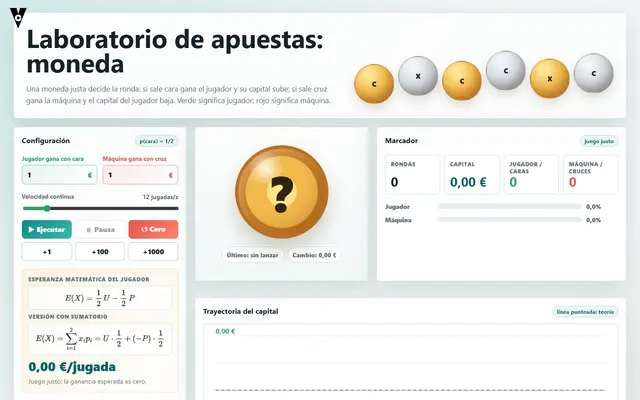
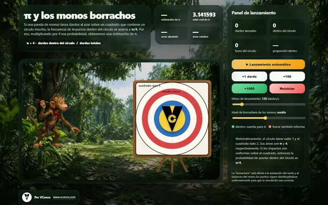

Probabilidad
Juego de los dos seises · Probabilidad con dos dados

Probabilidad
Laboratorio de apuestas | Moneda

Probabilidad
π y los monos borrachos — simulación realista
No hay resultados para esa búsqueda.

Simulaciones interactivas de VConce


No hay resultados para esa búsqueda.